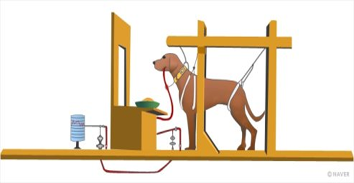
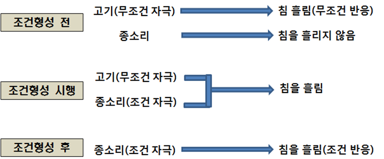
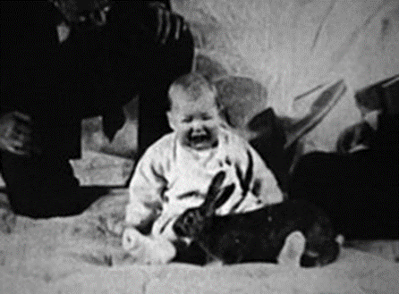

1. 파블로프의 고전적 조건형성-개와 종소리, 침
고전적 조건 형성은 파블로프에 의해 전개되었던 개의 타액 분비 실험에 근거한다. 고전적 조건화 또는 반응적 조건화란 이전에 반응을 유발하지 않았던 중립자극이었던 것이 조건화 과정을 거치면서 결국 자동 반응 또는 반사 반응으로 나타나는 것이다. 파블로프는 개의 타액 분비에 관해 연구하다가 개는 혀에 음식이 닿으면 침을 흘린다는 사실을 발견하였다.

첫 번째 단계에서 개는 먹이를 주면 무조건 침을 흘린다. 이때 먹이는 무조건 자극이고， 침을 흘리는 것은 무조건 반응이다. 다음 단계에서 개에게 음식을 제공할 때마다 반복적으로 종소리를 제시한 결과 이후 개가 음식이 없이 종소리만 듣고도 타액이 분비되는 조건화된 반응이 나타났다.
실험에서 전에는 반응을 일으키지 못했던 자극에 대해 조건형성이 이루어진다는 결과이다. 종소리는 개에게 아무런 반응을 일으키지 않는 중립자극이 먹이와 연결됨으로써 조건자극에 의해 개는 조건반응이 되어 침을 흘리게 된다. 이처럼 개는 중립자극이 반복 학습으로 결국 조건자극이 되어 종소리를 듣고 침을 흘리는 조건화가 이루어지게 된 것이다.

2. 행동주의 왓슨-고전적 조건형성 아기실험
왓슨(Watssonr)은 파블로프의 조건형성이론을 인간에 게 적용시켜 인간의 모든 행동을 자극과 반응의 연합으로 설명하였다. 왓슨은 관찰 가능한 행동만을 심리학의 연구 대상으로 보았고 사고， 목표， 감정과 같은 비행동적인 개념들은 연구 대상에서 제외시켰다.
왓슨은 레이너(Raynor)와 함께 정서적인 반사가 어떤 자극에 의해 조건화되는지를 알아보기 위해 11개월된 알버트(Albert)를 대상으로 실험하였다. 왓슨과 레이너는 알버트가 소리가 나는 금속 막대기에 대해서 무서워하는 반응을 보이나, 토끼에 대해서는 공포반응을 보이지 않는 것에 주목하는 것을 발견하였다.

알버트 앞에 토끼 인형(중립 자극)을 놓아두고 아이가 토끼 인형을 잡으려고 할 때마다 옆 에서 금속 막대기로 큰 소리(공포를 일으키는 무조건자극)를 제시하자 알버트는 깜짝 놀라면서 울기 시작했다. 토끼 인형(중립 자극)과 금속 막대기의 큰 소리 (무조건자극)의 연합을 7번 하였더니 처음에는 무서워하지 않았던 토끼 인형을 무서워하며 잡으려고 하던 손을 움츠리는 반응을 하게 되었다.
시간이 조금 지나자 알버트는 정서적 공포를 느끼기 시작하였다. 이후 알버트는 쥐와 비슷한 털을 가진 개, 모피옷, 털장난감, 수염 등에도 일반화되었다. 이 실험에서 연구대상 영아의 관찰 가능한 자극과 반응의 원리를 연구의 대상으로 삼았으며 사고, 감정과 같은 비행동적인 개념들은 연구 대상에서 제외시켰다. 그 결과 인간의 정서나 공포도 환경이나 조건에 의해 학습될 수 있음을 증명하였다.
고전적 조건화 또는 반응적 조건화는 이전에 반응을 유발하지 않았던 중립자극이었던 것이 조건화 과정을 거치면서 결국 자동 반응 또는 반사 반응으로 나타난다. 이러한 파블로프와 왓슨의 실험은 인간의 일상과 꼭 같지는 않다 하더라도 여러 가지 정서, 태도, 가치은 고전적 조건화 원리에 의한 학습의 기초를 형성하였다.